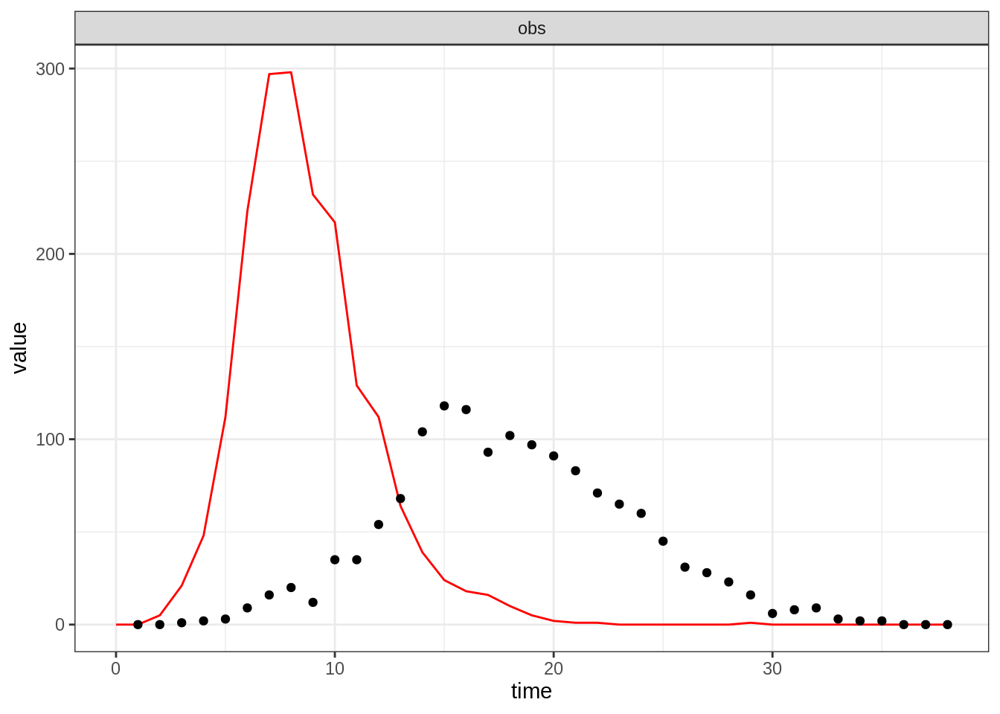

The aim of this first session is to set you up with a framework for model fitting. To do this, we will introduce you to the fitR package, which we have created to facilitate interaction during this course. This is not a full-fledged model fitting suite. Instead, we use it to provide you with model code that follows a common structure, as well as data and solutions to the practical exercises.
In this session, you will
fitR packageThe first part will be mostly about introducing you to the structure we have set up – you won’t have to do much yourself in this part, but it would be worth spending some time familiarising yourself with the code and the commands, to make sure you understand what is going on. Later, you will write your own function to calculate a posterior density and use it to explore an outbreak described by a simple SIR model.
First, we will work with a simple deterministic SIR model. We will later fit this to a simple data set. The model has two parameters, the basic reproductive number \(R_0\) and the infectious period \(D_\mathrm{inf}\). The model equations are
\[ \begin{cases} \begin{aligned} \frac{\mathrm{d}S}{\mathrm{d}t} &= - \beta S \frac{I}{N}\\ \frac{\mathrm{d}I}{\mathrm{d}t} &= \beta S \frac{I}{N} - \nu I\\ \frac{\mathrm{d}R}{\mathrm{d}t} &= \nu I\\ \end{aligned} \end{cases} \]
where \(S\), \(I\) and \(R\) stand for the susceptible, infected and recovered compartments, respectively, \(\beta=R_0/D_\mathrm{inf}\), \(\nu = 1/D_\mathrm{inf}\) and \(N = S + I + R\) is constant. To load this model into your R session, type
data(models)This will load a few fitmodel objects into your R session, including one called sirDeter (for “SIR, deterministic”). A fitmodel is simply a collection of functions and variables that define a model. Later in this session, you might change parts of the sirDeter model. If at any time something goes wrong, you can always go back to the original model by typing data(models).
To see the objects that the sirDeter model contains, type
names(sirDeter)## [1] "name" "stateNames" "thetaNames" "simulate" "rPointObs"
## [6] "dPrior" "dPointObs"A fitmodel object provides its description, as well as the names of its state variables and parameters. These can be accessed with
sirDeter$name## [1] "SIR with constant population size"sirDeter$stateNames## [1] "S" "I" "R"sirDeter$thetaNames## [1] "R_0" "D_inf"Moreover, each fitmodel contains four functions:
simulate to run the model,dPrior to calculate the prior density,dPointObs to calculate the log-likelihood of a given data point with respect to the model,rPointObs to generate observations from a model run.We will now look at these one after the other. If at any time you would like more information on the components of a fitmodel, you can do so by typing
?fitmodelTo simulate a model run, we use the simulate command which comes with a fitmodel (see above). To run the SIR model, we have to provide parameter values, initial state values and the times at which we want model output.
theta <- c(R_0 = 3, D_inf = 2)
initState <- c(S = 999, I = 1, R = 0)
times <- 1:100
traj <- sirDeter$simulate(theta, initState, times)We can now look at the output of the model run
head(traj)## time S I R
## 1 1 999.0000 1.000000 0.0000000
## 2 2 996.4323 2.709838 0.8578584
## 3 3 989.5301 7.295046 3.1748702
## 4 4 971.3444 19.297723 9.3579062
## 5 5 925.8476 48.804024 25.3483747
## 6 6 825.2761 111.044978 63.6789335head prints the first few rows of the data set. If you just type traj (without the head), you’ll see the whole trajectory.
To visualise model output, you can use plotTraj.
plotTraj(traj)Take 10 minutes to run the model with different values of the parameters and initial state, and output times.
Remember that if you want more detail on what the functions contained in a fitmodel do, type the function name after sirDeter$ (or whichever fitmodel object you are looking at; for now, we consider sirDeter). For example, to look at the simulate function of sirDeter, type
sirDeter$simulateThis is the key function that encodes the dynamic model we would like to fit to data (in this case, the simple SIR model). Take 10 minutes to look at that function and let us know if you have any questions. Tomorrow, we will give you a different fitmodel object for a different model that comes with its own simulate function.
To evaluate the (logarithm of the) prior for a certain combination of parameters, use the dPrior function
sirDeter$dPrior(theta)## [1] 0.0003367003sirDeter$dPrior(theta, log = TRUE)## [1] -7.996317Have a look at the dPrior function by typing
sirDeter$dPriorYou will see that this calculates the prior of the parameters using uniform distributions on \(R_0\) (between 1 and 100) and \(D_\mathrm{inf}\) (between 0 and 30). For the moment, just have a look at it and make sure you understand it. Later, we will modify this to see how the choice of prior distributions can influence the posterior distribution.
The dPointObs function is used to evaluate the likelihood of a data point. For example, the (logarithm of the) probability density of observing a prevalence of 18 when there are 31 infectious people in the sirDeter model is
sirDeter$dPointObs(dataPoint = c(obs = 18), modelPoint = c(I = 31), theta, log = TRUE)## [1] -5.583676Have a look at the dPointObs function by typing
sirDeter$dPointObsYou will see that this calculates the likelihood of a data point (above, an observed prevalence of 18 infections) by taking its obs member (an observation of prevalence) and evaluating it with respect to a Poisson distribution centred around the I member of the model point (above, a model prevalence of 31 infections).
In other words, it assumes that the observation follows a Poisson distribution centred around the current prevalence, and sirDeter$dPointObs answers the question: what is the probability of observing 18 cases when the prevalence is 31? For the moment, just have a look at the function and make sure you understand it. Later, we will modify this to see how the choice of the likelihood can influence the posterior distribution.
Let’s load a test data set contained in the fitR package using
data(epi)This contains several epidemic data sets. The first one, called epi1, has been created using this same SIR model, with an infectious period of 2 weeks, in a population of 1000, with 1 initial infected and the remaining population susceptible. Later, we will try to estimate the value of \(R_0\). You can look at this data set using
head(epi1)## time obs
## 1 1 0
## 2 2 0
## 3 3 1
## 4 4 2
## 5 5 3
## 6 6 9The observations (“obs”) in the epi1 data set are based on weekly observed prevalence (“I”). You can plot the data using
plotTraj(data = epi1)To calculate the log-likelihood of a set of parameters and initial state, we can use the dTrajObs function contained in fitR. This function takes a fitmodel, a parameter vector, an initial state and a data set as arguments and proceeds in 3 steps:
simulate function of the fitmodel with the given parameters and initial state.dPointObs function of the model.The value returned is \(\log(p(\mathrm{Data}|X_0, \theta))\): the log-likelihood of the chosen set of parameters and initial state.
dTrajObs(sirDeter, theta, initState, epi1, log = TRUE)## [1] -3507.914Of course, you might get a different number here if you played with the parameters. You will later need the dTrajObs function to calculate the posterior density as a function of the parameters. Feel free to have a look at the dTrajObs function (by typing dTrajObs and hitting return), to see how it performs its task.
The function rPointObs generates a single random observation from a single point in a model trajectory. At the moment, we won’t need this, but it will be later useful when it comes to model assessment.
rPointObs can be seen as the inverse of dPointObs. Whereas dPointObs evaluates the likelihood at a data point with respect to the model, rPointObs takes the model and generates a (randomly sampled) data point.
Note also that rPointObs differs from simulate. While simulate simulates the (in this case, deterministic) model trajectory, rPointObs encodes the uncertainty involved in observations to produce a random observation point on the basis of a state of the model. To generate a randomly observed prevalence on the basis of a true prevalence of 31, we can write
sirDeter$rPointObs(modelPoint = c(I = 31), theta)## obs
## 24Of course, you might see a different number, as the result of this command is the outcome of a random draw.
To generate a whole trajectory with simulated observation, we have implemented a function called rTrajObs, which can be seen as the inverse of dTrajObs. The rTrajObs function takes a fitmodel, a parameter vector, an initial state and a vector of observation times as arguments and proceeds in 3 steps:
simulate function of the fitmodel (see above, where you looked at sirDeter$simulate).rPointObs function at every time point to generate the observations.obsTraj <- rTrajObs(sirDeter, theta, initState, epi1$time)
head(obsTraj)## time S I R obs
## 1 1 999.0000 1.000000 0.0000000 1
## 2 2 996.4323 2.709838 0.8578584 4
## 3 3 989.5301 7.295046 3.1748702 8
## 4 4 971.3444 19.297723 9.3579062 8
## 5 5 925.8476 48.804024 25.3483747 49
## 6 6 825.2761 111.044978 63.6789335 112If you run this multiple times, you will find that the “obs” column is different every time. This is because the observations are results of random draws from the (deterministic) model trajectory. If we changed rPointObs to be deterministic (instead of a random draw from a Poisson distribution), the outcome of rTrajObs would be the same every time. Again, feel free to have a look at the rTrajObs function (by simply typing rTrajObs and hitting return), to see how it performs its task. It will be a good idea to look at the functions that we have provided you throughout the course.
Now you have completed the overview of a fitmodel object, you are going use some parts of it to code a function that will evaluate the posterior.
Code it yourself: Write a function to calculate the value of the posterior \(p(\theta, X_0|\mathrm{Data})\) (up to a normalisation constant) for a given set of parameters and initial state, with respect to a data set.
Below you will find the skeleton of such a function. We have inserted comments for every line that you should insert. If you are struggling at any point, click on the link below the code for a more guided example.
# This is a function that takes 4 arguments:
# - fitmodel, a fitmodel object that defines the model dynamics, prior and likelihoods.
# - theta, a named vector of parameters
# - initState, a named vector of initial states
# - data, the data set we are fitting the model to
# It should return the posterior for the given model, parameters, initial state and data.
my_dLogPosterior <- function(fitmodel, theta, initState, data) {
# calculate the `fitmodel` log-prior for parameter `theta`
# calculate the `fitmodel` log-likelihood for parameter `theta` and
# initial state `initState`, with respect to the data set `data`.
# return the logged posterior probability
}If you have trouble filling any of the empty bits in, have a look at our more guided example.
Once you are done with this, check that your function returns a sensible value.
my_dLogPosterior(sirDeter, theta, initState, epi1)## [1] -3515.91Would you expect to see the same value?
You can visually assess a model run against data using the plotFit function, which generates an observation trajectory from a model, parameters and initial state using rTrajObs (see above) and plots it (lines) against the data (points).
Note that you can also simulate multiple replicates (using the nReplicates argument) or plot the deterministic model trajectories (using allVars = TRUE). See ?plotFit for all available options.
plotFit(sirDeter, theta, initState, epi1)
Clearly, not a very good fit on this occasion. In the next section, you will explore the posterior distribution to find a better one. Before that, take 10 minutes to visually assess the fit of your model under different parameter sets and get familiar with the function plotFit.
You are now ready to do parameter estimation by exploring the posterior at different values of the parameter. In the next practical, we will see how to automate this step using MCMC, but for now let us simply evaluate the posterior at different values of the single unknown parameter, \(R_0\).
As stated above, the infectious period of the epi1 data set was 2 weeks. You can evaluate the posterior at different values of \(R_0\) using the function my_dLogPosterior you wrote above (or the one provided by clicking through to our solution).
Take 10 minutes to figure out in which range of \(R_0\) the posterior is maximised. Does the model fit the data (looking at plotFit)?
You can also change the prior and likelihood definitions of the sirDeter model. Remember that you can see the definition of sirDeter$dPrior and sirDeter$dPointObs by typing
sirDeter$dPrior
sirDeter$dPointObsTo change the prior and likelihood functions, copy and paste the functions, change them, and reassign them to their variables. For example, to change the point log-likelihood to follow a normal distribution, you could type
sirDeter$dPointObs <- function(dataPoint, modelPoint, theta, log = FALSE) {
# the prevalence is observed through a normally distributed process
return(dnorm(x = dataPoint[["obs"]], mean = modelPoint[["I"]], log = log))
}Take 20 minutes to try different distributions for the prior and likelihood distributions (you could try, for example, to make the prior narrower, or to use a normal distribution for the prior using dnorm; or you could use another distribution for the likelihood). Does the choice of distribution change the shape of the posterior distribution?
If you knew that on average only 10% of cases were reported, how would you change the point likelihood? You can test this with a second data set, epi2, which you can have a look at with
head(epi2)## time obs
## 1 1 0
## 2 2 0
## 3 3 1
## 4 4 2
## 5 5 3
## 6 6 9This was created with an infectious period 2 and a reporting rate of 10%. Can you estimate \(R_0\)?
Recurrent diseases like Influenza require additional mechanisms to explain their long-term dynamics. To get a better feel for the code used to simulate the model, you could modify the sirDeter model to include demographic processes (birth & deaths) as well as a seasonal forcing on the transmission rate of the pathogen (several solutions are possible).
This web site and the material contained in it were originally created in support of an annual short course on Model Fitting and Inference for Infectious Disease Dynamics at the London School of Hygiene & Tropical Medicine. All material is under a MIT license. Please report any issues or suggestions for improvement on the corresponding GitHub issue tracker. We are always keen to hear about any uses of the material here, so please do get in touch using the Discussion board if you have any questions or ideas, or if you find the material here useful or use it in your own teaching.